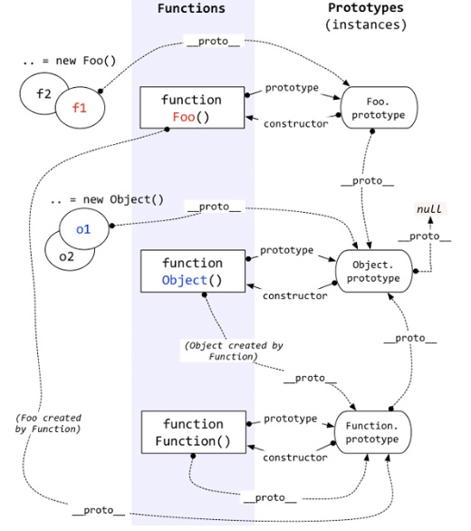

直接给构造函数 Person.nationality = "English" 是不行的
建议把方法都移到原型上，这样创建的对象都是共享同一个函数，这样可以节省很多内存
比如，假设我们上面Person这个构造函数里还有this.hello=function(){...}，然后用这个构造函数创建了对象x和y，但是会发现 x.hello===y.hello 是false，对然他们的函数名称和代码都是相同的，但是是两个不同的函数
如果我们不在构造函数里写方法，而是把方法直接写到prototype上，那它们就可以===了
修改__proto__属性
__proto__指向创建这个对象的函数(constructor)的prototype
但究竟为什么这里可以直接myFather.__proto__=Bird呢？我目前还不知道
例如，创建一个Array对象：
var arr = [1, 2, 3];
其原型链是：
arr ----> Array.prototype ----> Object.prototype ----> null
当我们用obj.xxx访问一个对象的属性时，JavaScript引擎先在当前对象上查找该属性，如果没有找到，就到其原型对象上找，如果还没有找到，就一直上溯到Object.prototype对象，最后，如果还没有找到，就只能返回undefined
上面myFather的旧原型链是：
myFather ----> Person.prototype ----> Object.prototype ----> null
新原型链是：
myFather ----> Bird.prototype ----> Object.prototype ----> null
constructor 属性返回对象的构造函数
JavaScript 数组 constructor 属性返回 function Array() { [native code] }
JavaScript 数字 constructor 属性返回 function Number() { [native code] }
JavaScript 字符串 constructor 属性返回 function String() { [native code] }
myFather.constructor === Person.prototype.constructor; // true
Person.prototype.constructor === Person; // true
instanceof 用于判断一个变量是否属于某个对象的实例
myFather instanceof Person; // true
看懂这张图，就差不多了
